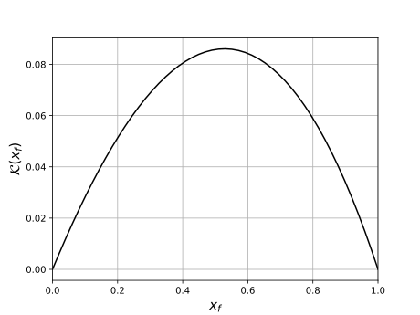
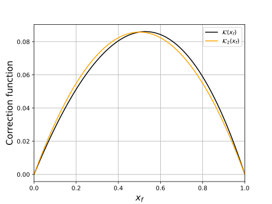
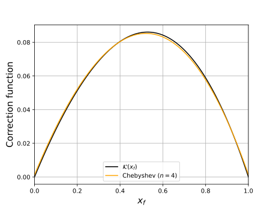
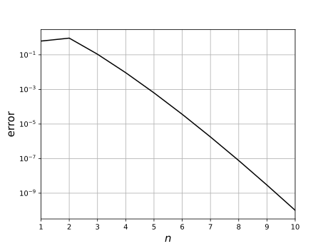
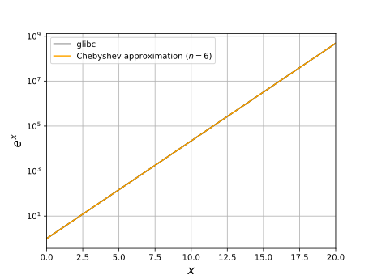
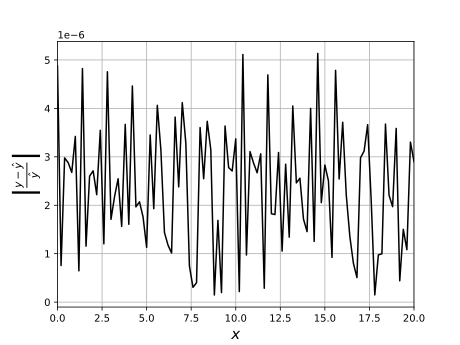

Approximating the exponential function
While working on a project related to neural networks I came across the softmax function \[\begin{equation*} \mathrm{softmax}(\mathbf{x})_i=\frac{e^{x_i}}{\sum_{j=1}^ne^{x_j}},~\mathbf{x}\in\mathbb{R}^n, \end{equation*}\] which is heavily used in linear neural netwoks for classification. Due to the heavy use of the function, there is an interest in finding optimizations for the exponential function. While diving deeper into the subject, I found a paper by Malossi, A. Cristiano I. & Ineichen, Yves & Bekas, Costas & Curioni, Alessandro, which presents an interesting implementation for approximating the exponential function. The implementation offers flexible tuning of parameters to obtain the accuracy needed. In this post I go through the implementation and experiment with it using different parameters.
IEEE format of floating point numbers
The IEEE Standard for floating point arithmetic, better known as IEEE 754 or IEEE arithmetic, expresses single precision floating point numbers as \[\begin{equation} \label{eq:1} (-1)^s(1+m)2^{x-x_0}, \end{equation}\]where $s$ is the sign bit, $m$ is the fraction/mantissa (8 bits), $x$ is the exponent (23 bits) and $x_0$ is a constant bias. For 32 bit floating point numbers $x_0=127$. These variables are layed out in a 32 bit floating point variable in the following way:
+---+----------+-----------------------+
| s | x | m |
+---+----------+-----------------------+
1 8 23
This representation offers a clever way to approximate the exponential function. By formulating the exponent of $x$ as
\[\begin{equation} e^x=2^{x\log_2{e}}=2^{\frac{x}{\ln{2}}}=2^{x_i+x_f}, \end{equation}\]where $x_i$ and $x_f$ are the integer and fraction part of $\frac{x}{\ln{2}}$ respectively, we notice a similarity between the formulation and equation $\ref{eq:1}$. We write
\[\begin{equation} 2^{x_i}2^{x_f}\approx 2^{x_i}\left(1+m-\mathcal{K}\right), \end{equation}\]where $\mathcal{K}$ is a correction function. This corresponds to using $x_i$ as the exponent and $(1+m-\mathcal{K})$ as an approximation of $2^{x_f}$. Since the fraction part $x_f$ corresponds to the mantissa $m$ we get
\[\begin{equation} 2^{x_f}=1+x_f-\mathcal{K}\Rightarrow\mathcal{K}(x_f)=1+x_f-2^{x_f}. \end{equation}\]To obtain the exponent we look at the layout of the 32 bit floating point number. By storing \[\begin{equation} 2^{23}\cdot\left[\frac{x}{\ln{2}}+\mathcal{K}\left(x_f\right)+x_0\right] \end{equation}\] into a 32 bit integer we get a sequence of bits where $2^{x_i}$ is stored in the bits corresponding to the exponent and the bits corresponding to the mantissa contain $2^{x_f}$. By casting the integer to a 32 bit floating point number we obtain an approximation of $e^{x}$.
Modeling the correction function
There is a vast amount of methods that can be used to model the correction function $\mathcal{K}(x_f)$. We are going to use polynomial approximation which was also used in the paper. We reformulate the correction function as
\[\begin{equation} \mathcal{K}_n\left(x_f\right)=a_0+a_1x_f+a_2x_f^2+...+a_nx_f^n,~n\in\mathbb{N}, \end{equation}\]where $a_0,...,a_n$ are coefficients with values depending on the chosen polynomial approximation method. The values of $\mathcal{K}\left(x_f\right)$ over $x_f\in[0,1)$ are shown in the figure 1.

The figure suggests that an approximation of form $\mathcal{K}_2\left(x_f\right)=a_0+a_1x_f+a_2x_f^2$ could be a good first trial. We obtain coefficients
\[\begin{equation} \begin{split} \mathcal{K}\left(0\right)=0&\Rightarrow a_0=0\\ \mathcal{K}\left(1\right)=1&\Rightarrow a_2=-a_1\\ \dfrac{d}{dx_f}\mathcal{K}_2\left(x_f\right)=a_1-2a_1x_f=0&\Rightarrow x_f=\frac{1}{2}\\ \mathcal{K}\left(\frac{1}{2}\right)=\frac{3}{2}-\sqrt{2}&\Rightarrow a_1=6-4\sqrt{2}. \end{split} \end{equation}\]Figure 2 shows correction functions $\mathcal{K}$ and $\mathcal{K}_2$.

We can see that $\mathcal{K}_2$ does not quite align with $\mathcal{K}$. To obtain a more accurate approximation we introduce Chebyshev polynomials. We begin by defining Chebyshev coefficients
\[\begin{equation} c_i=\frac{n}{2}\sum_{k=1}^n\mathcal{K}\left(\cos\left(\frac{\pi\left(k-\frac{1}{2}\right)}{n}\right)\right)\cos\left(\frac{\pi i\left(k-\frac{1}{2}\right)}{n}\right). \end{equation}\]The approximation is given by
\[\begin{equation} \mathcal{K}_n\left(x\right)=\sum_{k=0}^{n-1}c_kT_k(x)-\frac{1}{2}c_0, \end{equation}\]where $T_i\left(x\right)=\cos(i\cos^{-1}(x))$ is the $i$:th Chebyshev polynomial of first kind. Chebyshev interpolation of $\mathcal{K}$ with $n=4$ is shown in figure 3. The errors $||\mathcal{K}-\mathcal{K}_n||$ for different values for $n$ is displayed in figure 4.


We see that the error decreases significantly as $n$ increases. Let us now examine the accuracy of the approximations of $e^x$ using Chebyshev polynomials. Let us use $n=6$. At first glance the Chebyshev polynomials $T_i(x)$ seem computationally tricky. Luckily for us, they can be expressed as
\[\begin{equation} \begin{split} T_0(x)&=1\\ T_1(x)&=x\\ T_{n+1}(x)&=2xT_n(x)-T_{n-1}(x). \end{split} \end{equation}\]
Our polynomial takes form
\[\begin{equation} \begin{split} \mathcal{K}_5\left(x_f\right)=&\frac{1}{2}c_0-c_2+c_4+(c_1-3c_3+5c_5)x_f\\ &+(2c_2-8c_4)x_f^2+(4c_3-20c_5)x_f^3+8c_4x_f^4+16x_f^5. \end{split} \end{equation}\]Figure 5 displays a comparison between the Chebyshev approximation with $n=5$ and the glibc implementation.


We see that the values align with each other with relative difference having magintude $\sim10^{-6}$. Figure 4 suggests that the approximation might improve by increasing $n$. This will of course come at a cost of increased number of arithmetic operations per approximation. The beauty of this method is that the computational efficiency and accuracy can be adjusted according to use case. I highly recommend diving deeper into the paper to see further analysis on this topic.
Ending words
That is it for now. We managed to get some relatively accurate exponential function approximations using Chebyshev polynomial approximation. While playing around with the approximation I did some benchmarking against the glibc implementation. I tried all sorts of tricks such as SIMD instructions but somehow my implementation got smoked by it every single time. The optimization and an autopsy of the glibc implementation might be the topic of some future post...
For those interested, here is the unoptimized approximation implementation. It is almost identical to the paper mentioned in the opening words.
inline double itod(uint64_t i) {
union {
uint64_t i;
double f;
} u = {i};
return u.f;
}
double fexp(float x) {
// Multiply by 1/ln(2)
x *= LOG2E;
const double xf = x - floor(x);
// A0, A1, ... are the Chebyshev coefficients
x -= A0+xf*(A1+xf*(A2+xf*(A3+xf*(A4+xf*A5))));
uint64_t i = (uint64_t)(A*static_cast(x)+B);
return itod(i);
}